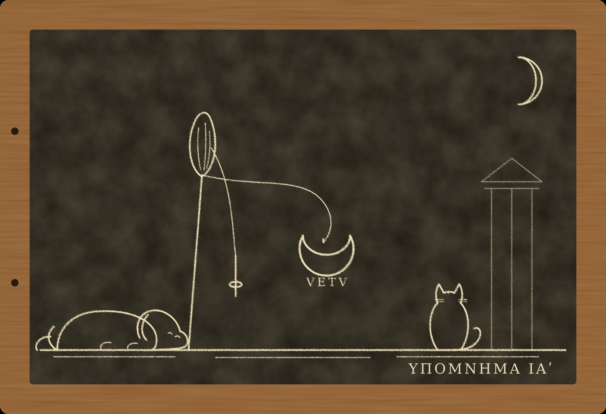

Гипомнема XI Век

I
Грамматик Цензорин написал в тот самый год, когда я завёл табличку «Чужие кары», книжку о дне рождения. Он подарил её другу и, если верить переписчикам, назвал в ней веком самую долгую человеческую жизнь, от рождения до смерти. Я прочёл её в лавке у Аргилета, пока Пами спал на соседнем свитке и хозяин не прогнал его метлой. Кот уверяет, что тоже запомнил главное, а именно что в длинных книгах удобно спать. Оно пришлось мне по душе, потому что выходит, что век кончается не по календарю, а когда умирает последний человек, который помнит его начало.
Весной двести сорок восьмого года Рим собирался праздновать тысячу лет от основания города, и у меня было много времени думать о веках. Стражи слов в такие годы нужны всем. Коллегии, жрецам, магистратам, подрядчикам, которые строят на Марсовом поле деревянные трибуны и клянутся, что брёвна сухие. Я снова ношу тогу, которую мне вернули семь лет назад той же самой, с тем же пятном от вина на левом плече, и снова хожу на Квиринал к Дию Фидию через день. В пару мне дали Никанора. Мы повторяем хранимое каждый вечер, как велит обычай, и каждый вечер он говорит первым. Об этом мы условились сразу и ни разу не возвращались к разговору.
Двор Филиппа хотел, чтобы игры прошли без единого дурного знака. Август жил в Риме вместе с сыном, которого в прошлом году тоже провозгласили Августом. Мальчику шёл десятый или одиннадцатый год, и в Субуре его жалели вслух, а при префектовых людях молчали. Игры назначили на Парилии, на двадцать первый день апреля, праздник пастухов, в который, по преданию, Ромул провёл борозду вокруг Палатина. Обряды решили взять у Августа, того, первого, который справлял вековые игры при Горации. Значит, будут ночные жертвы у Тарента, будут сто десять матрон, которые угощают богинь, и будет гимн. Гимн поют двадцать семь мальчиков и двадцать семь девочек, у которых живы и отец, и мать.
Вот из-за этого хора ко мне в начале марта и поднялся Гай Сульпиций, виноторговец из-за Тройных ворот.
Ферокс встретил его как родного. Ферокс в этом году встречает так всех, потому что слышит хуже и не хочет ошибиться в другую сторону. По всем собачьим законам ему давно полагается лежать в земле. Я по-прежнему не тороплюсь ему об этом сообщать. Пами смотрел с балки и решил, что гость пахнет вином, а не рыбой, а значит, вставать незачем.
Сульпицию было за тридцать. Он был широкий, румяный, с руками человека, который сам грузит амфоры, когда грузчики пьяны, и сел так, будто стул под ним был чужой и он за него заплатил.
— Мою племянницу, Юнию, взяли в хор, — сказал он. — Дочь моей сестры. Ей десять лет. Её выбрали жрецы, пятнадцать мужей, которые ведают Сивиллиными книгами, вы их знаете. Отец жив, мать жива, все свободнорождённые. Семья гордилась до прошлых календ.
— А в прошлые календы?
— В прошлые календы к претору пришёл мой дядя, Луций Ветурий Марцелл, брат моей матери, и заявил, что моя мать рабыня.
Я спросил, чья.
— Его, — сказал Сульпиций. — По наследству от деда. Он говорит, что настоящая дочь деда умерла младенцем, а мать подменили ребёнком кормилицы. Если мать рабыня, то брак её с отцом не брак, и я раб, и сестра рабыня, и Юния рабыня. А раз Юния рабыня, ей нельзя петь гимн века, и дядя Марцелл, как благочестивый человек, не может этого допустить накануне тысячелетия.
Он сказал «благочестивый» тем голосом, каким в Субуре говорят «честный» о сборщике податей.
— У отца было хорошее дело, — прибавил он. — Склады, две баржи. Всё это теперь моё. Если я раб, это всё дядино.
Я спросил, откуда у дяди такие сведения.
— У них в доме живёт старый отпущенник деда, Гермет. Ему под восемьдесят. Он говорит, что сам вынес младенца из дома. Он готов поклясться.
— А ваша мать?
— Мать говорит, что пела гимн при Севере. В двести четвёртом году, когда ей было десять лет. Её взяли в хор так же, как теперь Юнию. Туда не берут рабских детей, это знает весь Рим. Она тоже готова поклясться.
Он посмотрел на меня так, как смотрят на лекаря, когда тот ещё не сказал, будут ли резать.
— Мне сказали, что вы составляете клятвы, которые переживают люди.
— Мне говорили то же самое, — ответил я. — Иногда это правда.
II
Ветурию Тертуллу я увидел на следующий день в её доме у Тройных ворот. Дом стоял под самым Авентином, окнами на склады, и пахло там смолой, вином и рекой. Ей было за пятьдесят. Она была высокая, сухая, с прямой спиной и с той привычкой держать подбородок, которая бывает у женщин, выросших в хороших домах, и у женщин, которые всю жизнь хотели, чтобы их за таких принимали. Отличить одних от других я не умею, хотя двадцать лет считал, что умею.
Она сидела у ткацкого станка. Ткать ей было незачем, в доме хватало рабынь, но руки её, видимо, привыкли быть заняты, когда хозяйка волнуется. Внучка, худая девочка с материнскими бровями, сидела у неё в ногах и разбирала шерсть.
Я спросил её о двести четвёртом годе.
— Мне было десять, — сказала Тертулла. — Отец привёл меня на Палатин, к жрецам. Нас было много, они отбирали. Смотрели, нет ли изъяна, спрашивали имена отца и матери. Потом месяц учили гимн. В начале лета мы пели его на Палатине и на Капитолии, в белом, с венками. Я помню, что у одного мальчика пошла кровь из носа, и его увели. Я помню, что Август Север был очень смуглый и что императрица смотрела на нас так, будто считала.
— Слова гимна помните?
Она не ответила. Внучка подняла голову и сказала:
— Бабушка поёт его, когда прядёт. Свой, старый. А мне жрецы дали новый, я его учу.
Я объяснил Тертулле, как устроена её клятва. Свободнорождённость в Риме доказывают свидетелями, а не собой: никто не помнит своего рождения, и поклясться в нём нельзя, потому что клянутся только в том, что знают или думают, что знают. Можно поклясться, что тебя всю жизнь звали дочерью Луция Ветурия, но это доказывает лишь то, как тебя звали. Можно поклясться, что ты пела гимн века, и это доказывает больше. Жрецы проверяли тех, кого брали. Если претор услышит, что её проверили пятнадцать мужей при Августе Севере, он задумается.
— Почему не поклясться прямо, что я свободная? — спросила Тертулла. — Я знаю, что я свободная.
— Вы так думаете, — сказал я. — Это не одно и то же. Если вы правы, клятва вас не убьёт. Если вы не правы и не знаете этого, она тоже вас не убьёт, но вы будете считать ночи до луны так, как будто убьёт. Я видел, как люди умирают от счёта. Не хочу, чтобы вы считали.
Она посмотрела на меня, как смотрят на человека, который сказал слишком много. Ни одна из её рабынь не повернула головы, а значит, рабыни у неё были хорошо выучены.
Формулу я составил в тот же вечер, и Никанор, прочтя её с моей таблички, вернул табличку мне.
— Ты построил её так, — сказал он, — что она выживет, даже если Марцелл прав.
— Я построил её так, что она скажет правду о том, что знает. Остальное решит претор.
— Учитель, — сказал Никанор. С тех пор как я стал снова стражем слов, он называет меня учителем, только когда со мной не согласен. — Ты строишь клятвы, которые не могут убить. Это хорошо. Но тогда они ничего и не могут доказать. Евмен строит такие же.
Я ответил, что Евмен строит их, чтобы прятать правду, а я, чтобы не прятать человека. Никанор промолчал, и я услышал в этом молчании то, что слышу всегда: он помнит, что я однажды заставил его поверить в чужие слова, и ни разу мне об этом не напомнил.
За шестнадцать ночей до луны, у Дия Фидия на Квиринале, при жреце и при нас с Никанором, Ветурия Тертулла положила руку на камень и сказала:
— Девочкой я пела гимн века на играх Августа Севера, в хоре дочерей, у которых были живы отец и мать. Меня привёл к жрецам Луций Ветурий, которого я называла отцом. Клянусь в этом.
Голос у неё не сел. Она клялась так, как ткут: ровно, не глядя.
Гермет вышел вторым. Он был маленький, кривой, лысый, в чистой тунике отпущенника и с шапкой в руках, которую мял, пока говорил. За него формулу составлял адвокат Марцелла, и составлял неплохо.
— В тот год, когда Август Север воевал с Нигером, госпожа моя, жена Луция Ветурия, родила дочь. На восьмой день девочке дали имя. На девятый день она умерла. Я сам вынес её тело из дома. Клянусь в этом.
Он не запнулся ни на одном слове. Руки у него тряслись, но у стариков они трясутся и без клятвы.
Двое людей поклялись, и обе клятвы не могли быть правдой. Так решил Рим, и Рим стал ждать луну.
III
Луна пришла. Младший понтифик выкликнул её с Капитолия, у Курии Калабры, я сам видел серп из своего окна, которое смотрит на закат. Тертулла была жива. Гермет тоже.
Рим растерялся, как растерялся бы человек, у которого из опрокинутого кувшина не полилась вода. Если умирает тот, кто солгал, а не умер никто, значит, никто не солгал. Если никто не солгал, то дочь Луция Ветурия умерла на девятый день, а другая дочь Луция Ветурия пела гимн при Севере. В Субуре решили, что девочек было две и одна из них была близнецом. Над этим смеялись у колодца, пока кто-то не вспомнил, что близнецов в хороших домах не прячут. Тогда решили, что одна из клятв была по формуле, а не по смыслу, и замолчали, потому что говорить о формулах при страже слов неловко, а я живу на верхнем этаже и спускаюсь к колодцу каждое утро.
Претор рассудил иначе и скучнее. Раз клятвы свободных людей не дают ответа, ответ дадут рабы дома Ветуриев. Их спросят под пыткой, как спрашивают всегда, когда свободные молчат. Только не сейчас. До Парилий суды закрыты, а после Парилий три дня и три ночи будут игры. Рабов спросят в первый же день, когда суд откроется.
Сульпиций сказал мне это, стоя посреди моей комнаты и задевая головой связку чеснока под балкой.
— Там восемь рабов, — сказал он. — Самой старой за семьдесят. Это мамина кормилица, Фебе. Мать её любит. Если её поведут на дыбу, она не выдержит.
— Мать?
— Обе.
Он ушёл. Я сел к столу и понял, что не знаю, чего боюсь больше: что старую кормилицу будут пытать за чужую ложь или что под пыткой она скажет правду.
На другой день я пошёл на Марсово поле, к Таренту.
Тарент лежит у изгиба Тибра, на северном краю поля, там, где земля ещё сыра после разливов. Это не храм, а место. Под землёй там, на глубине человеческого роста, стоит алтарь Диса и Прозерпины, подземных богов, и его откапывают только к вековым играм, раз в жизнь человека, а потом засыпают снова. Сейчас над ним уже ставили навес, и рабы выбрасывали землю корзинами. Рядом, в стороне от раскопа, стоят два мраморных столба. На одном высечено, как справляли игры при божественном Августе, на другом, как при Севере.
Писать в Риме считается занятием для рабов и торговцев, и я пишу. Но читать на камне не стыдно никому, потому что камень ставят не для памяти, а для богов, которым память не нужна. Я стоял у столбов долго, пока работники не начали на меня оглядываться.
На Августовом столбе я нашёл то, что знал и без него. Гимн пели двадцать семь мальчиков и двадцать семь девочек, у которых были живы отец и мать, и сочинил его Квинт Гораций Флакк. Северов столб был побит и поставлен по кускам. Пятнадцать мужей, сенатор, говоривший за них, жертвы за благополучие империи, матроны, ночные обряды. Строки, где мог быть хор, пропадали в сколе. Имён детей на камне не было ни при Августе, ни при Севере. Их и не могло быть: кто вспоминает через сто лет имена детей, певших гимн?
Я вспомнил Цензорина. Век кончается, когда умирает последний, кто помнит его начало. Тот, кто помнил начало Тертуллиной жизни, мог быть жив. Камень его не заменит.
Ферокс, которого я взял с собой, лёг на мокрый песок у раскопа и смотрел в яму с таким выражением, будто там кто-то спал.
— Там внизу пахнет старыми костями, — сказал он. — И огнём. Давно.
— Там алтарь подземных богов.
— Не знаю, что такое боги, — честно ответил Ферокс. — Но кости там есть. И мыши.
IV
Я вернулся к Тертулле через два дня, и на этот раз со мной пошёл Пами, что было неожиданно. Пами ходит со мной только туда, где есть рыба или где есть чем заняться лапами. В доме у Тройных ворот было и то и другое: склады, а при складах мыши.
Тертулла снова сидела за станком, и снова у её ног сидела Юния. Девочка учила новый гимн и пела его вполголоса, сбиваясь на одном и том же месте. Бабушка, не поднимая глаз от нитей, напевала под нос другой напев, старый, и слов почти не было слышно. Пами забрался на подоконник, свернулся и стал слушать. Через некоторое время он сказал мне:
— Старая ни разу не сбилась, хотя поёт своё и под чужое. Маленькая сбивается всегда в одном месте. Старая поёт так, как поёт тот, кто когда-то пел перед всеми и боялся сбиться. Это заметно по хвосту.
— По хвосту?
— Если бы у неё был хвост, сейчас он лежал бы спокойно, — пояснил кот. — А тогда, перед всеми, распушился бы и прижался к ногам. Так бывает, когда страшно, а убежать нельзя. Потом запоминаешь надолго.
Он закрыл глаза.
Я спросил Тертуллу о детстве. Она рассказывала охотно, как рассказывают о том, что давно прошло и уже не болит. Дом Ветуриев стоял на Эсквилине, на Каринах, и стоит там до сих пор, только теперь в нём Марцелл. Отец был всадником, держал подряды на поставку зерна, был строг и молчалив. Мать была болезненная. Марцелл родился, когда Тертулле было четыре года, и мать после этого почти не вставала.
— Она говорила мне, — сказала Тертулла, — что я родилась в лихорадке. Не я, она. Она девять дней лежала в жару, а когда очнулась, ей принесли меня. Она говорила это как сказку. Ты родилась, а я тебя девять дней не видела. Боги оставили тебя мне.
Я спросил, кто её кормил.
— Фебе, — сказала Тертулла и впервые подняла глаза. — Моя кормилица. Она и сейчас там, у брата. Она старая. Брат грозится, что после игр...
Она не договорила, и я не стал спрашивать дальше.
Уходя, я спросил Юнию, где именно она сбивается. Девочка вспыхнула и сказала, что на строке, где хор просит Луну услышать девочек. Я сказал, что двадцать лет помнил чужие клятвы слово в слово и тоже сбивался. Это была неправда, но клятвы при этом не было, и девочка мне поверила.
На улице Пами пошёл впереди, по краю мостовой, как ходит, когда собирается сказать что-нибудь, за что потом потребует рыбы.
— Старая сказала «принесли меня», — сказал он, не оборачиваясь. — Не «принесли ребёнка».
— Она сказала, как ей говорили.
— Ей говорили, — согласился кот. — А кто носил?
V
Дом Ветуриев на Каринах был тем самым домом, о каких в Субуре говорят, что там не нужно подниматься по лестнице, чтобы увидеть небо. Перед ним был двор с фонтаном, за ним сад, а в саду у задней стены, под навесом, сидели за прялками старые рабыни.
Марцелл принял меня в атрии. Ему было под пятьдесят. Он был похож на сестру лицом и не похож всем остальным: она держала подбородок, а он его выставлял. Говорил он о благочестии, о тысячелетии, о том, что предки не простят, если гимн века споёт рабское отродье, а боги не простят тем более. О складах и баржах он не сказал ни слова, и это было единственное место в его речи, где он был осторожен.
Я спросил, когда Гермет рассказал ему о младенце.
— Этой зимой, — ответил Марцелл. — Когда стало известно, что внучку моей сестры, так сказать, сестры, взяли в хор. Гермет пришёл ко мне ночью и плакал. Он сказал, что носил этот грех сорок лет и не может допустить, чтобы гимн тысячелетия снова пела кровь рабыни.
— Снова?
Марцелл посмотрел на меня с удовольствием, как смотрят на гостя, который наконец задал правильный вопрос.
— Вы же знаете, что говорят о Севере. Он справил вековые игры, и через семь лет умер в Британии, а его сыновья перерезали друг друга. Потом и весь его дом кончился на Рейне, под мечами солдат. Люди не дураки. Люди говорят, что игры были нечистыми. Гермет, бедняга, думает, что знает почему.
Я попросил разрешения поговорить со старыми рабами. Марцелл пожал плечами и сказал, что я могу говорить с кем угодно, только не под клятвой, потому что рабы не клянутся, а пытать их будет претор. Он сказал это так, как говорят о погоде.
Ферокс, которого я оставил у фонтана, к этому времени ушёл в сад сам. Я нашёл его под навесом у задней стены. Он лежал у ног самой старой из прях, положив голову ей на колени, и смотрел на неё снизу вверх тем взглядом, каким смотрит на водоносов и на сборщика платы. Старуха гладила его по голове, не переставая прясть.
— Фебе? — спросил я.
Она кивнула. Ей было за семьдесят. Она была маленькая, тёмная, высохшая, как корень, и глаза у неё были светлые, почти прозрачные. Такие глаза бывают у людей, которые очень долго смотрели на одно и то же.
— Хорошая собака, — сказала она. — Старая.
— Как вы, — сказал я.
— Как я, — согласилась Фебе.
Я задал ей несколько пустых вопросов о доме и о хозяйке, и она дала мне несколько пустых ответов. Ферокс за это время не сдвинулся. Когда я позвал его, он встал неохотно и пошёл за мной, оглядываясь.
— Она пахнет как та, у станка, — сказал он мне у ворот. — Как та, которая у реки.
— Как Тертулла?
— Не знаю имён. Как щенки одной суки пахнут. Одинаково, но по-разному. Я не понимаю, почему одна живёт у реки, а другая тут сидит.
Ферокс никогда не понимал родства, наследства и денег. Он понимает запахи, и я давно привык, что он прав там, где не понимает.
Пами в этот раз не пошёл со мной в дом. Он остался на крыше соседней пекарни, а вечером пришёл в Субуру позже меня и положил мне на стол маленький серебряный полумесяц на истлевшем шнурке. Такие полумесяцы, лунулы, вешают на шею девочкам от сглаза, а снимают перед свадьбой.
— Корзина у неё под прялкой, — сказал кот. — В корзине шерсть, гребень, сухой хлеб и это. Пахнет старухой и ещё младенцем, совсем давно. Я взял, потому что блестит. За это мне полагается рыба. Две.
Я перевернул лунулу. На обратной стороне кто-то процарапал иглой четыре буквы: VETV. Буквы были неуклюжие. Так царапает человек, который не умеет писать, но видел, как пишут, и хотел, чтобы осталось.
VI
Ночью я вернулся на Карины. Ферокса я оставил дома: ночью он лает на ворота громче, чем следует. Сторож у задней калитки сада знал меня по утреннему разговору и за медную монету согласился не знать меня до рассвета.
Фебе не спала. Старые рабыни спят мало, как и старые стражи слов. Она сидела под тем же навесом, без прялки, и смотрела на луну, которой было уже пять дней. Я сел рядом и положил ей на колени лунулу.
Она не испугалась. Она взяла полумесяц, сжала его в кулаке и некоторое время ничего не говорила.
— Это кот, — сказала она наконец. — Я видела кота на крыше.
— Это кот, — согласился я.
— Котам всё равно, — сказала Фебе. — Это хорошо.
Потом она рассказала. Я ни о чём её не спрашивал, и она говорила, глядя не на меня, а на луну, так, как говорят люди, которые сорок с лишним лет повторяли рассказ про себя и наконец нашли, кому его сказать вслух.
Её купили в дом Ветуриев молоденькой, из Каппадокии. Господин был молод и молчалив, госпожа больна, и господин ходил к ней, к Фебе, как ходят к рабыне, не спрашивая. В тот год, когда Север воевал с Нигером, они родили почти в один день, госпожа и она. Госпожа родила девочку и заболела родильной горячкой. Девочку отдали кормить Фебе, вместе с её собственной. Обе были девочки, обе от одного отца. На восьмой день жрец дал госпожиной дочери имя, Ветурия, и господин повесил ей на шею вот эту лунулу. На девятый день госпожина дочь умерла у Фебе на руках. Тихо, без жара, просто перестала дышать к утру.
Госпожа лежала без памяти. Лекари говорили, что если она очнётся и узнает, то не встанет никогда. Господин пришёл под утро, посмотрел на двух девочек, одну живую и одну мёртвую, и сказал Фебе одно слово: «Переодень». Гермет вынес мёртвую. Он думал, что выносит рабское дитя, и господин ему так и сказал. Хоронить младенцев с почестями не принято, и Гермет закопал её за садом, у стены. Только сорок лет спустя, этой зимой, старик что-то понял или что-то вспомнил. Фебе не знала, что именно.
— Он слышал, как я плачу, — сказала она. — Тогда, когда нёс. Я плакала над мёртвой. Он думал, я плачу над своей. А я плакала над той, потому что она умерла у меня. Потом он годы видел, как я смотрю на маленькую госпожу. Наверное, сложил.
Лунулу она сняла с мёртвой, перед тем как переодеть живую. Господин повесил своей живой дочери новую. Старую Фебе спрятала, а через несколько лет попросила соседского раба нацарапать на ней имя. Буквы были неправильные. Раб тоже писал плохо.
— Почему вы её не выбросили?
— Чтобы кто-то помнил ту, — сказала Фебе. — Её никто не помнит. Только я.
Я спросил про двести четвёртый год.
Фебе улыбнулась, и это было страшнее всего, что она сказала до того.
— Я стояла на Палатине, в самой задней толпе, с рабынями. Её видно было в третьем ряду, в белом. У неё был самый тонкий голос. Мальчик рядом с ней залил себе тунику кровью из носа, его увели, а она не сбилась. Господин стоял впереди с всадниками и плакал. Никто не понял почему. Думали, от благочестия.
— Он знал, что делает?
— Он знал, — сказала Фебе. — Он мне сказал вечером: если боги не хотят, пусть скажут. Боги ничего не сказали.
Луна над садом стояла низко. Я подумал о том, что пятнадцать мужей при Севере проверяли детей, спрашивая имена отца и матери, и что Тертулла назвала им отца правильно. Мать она назвала ту, которую знала. Никто не солгал. Даже Север, если на то пошло, ничего не узнал и умер в Британии от своих болезней через семь лет, как умирают все. Его сыновья перерезали друг друга по причинам, о которых в Риме знали задолго до вековых игр.
— Ты скажешь претору? — спросила Фебе.
— Я страж слов. Если претор спросит меня под клятвой, что я знаю, я скажу, что я знаю.
— А он спросит?
Я ответил, что не знаю.
— После игр меня спросят и так, — сказала она. — На дыбе. Я старая. Может быть, я умру раньше, чем что-нибудь скажу. А может быть, скажу. Я не знаю, что я скажу, когда будет больно. Никто не знает.
Она протянула мне лунулу обратно.
— Возьми. Если я скажу, пусть у неё будет хоть это. Если не скажу, выбрось в Тибр. Только ей не говори. Пусть она думает, что мать её та, на Каринах, которая лежала в жару. Это хорошая мать. Я видела.
Я взял лунулу. Это была первая вещь за десять лет, которую мне дали на хранение, а не в память.
VII
Евмен поднялся ко мне за пять дней до Парилий, вечером.
Я услышал его шаги на лестнице, как слышал в первый раз. Он не отдыхал, не считал ступени и на третьей сверху не замедлился. Ферокс встал, вышел к нему на площадку, взял его зубами за край плаща и потянул внутрь, бережно и настойчиво. Так он делает только с теми, кто уже бывал в этом доме: гость, по его понятиям, должен идти в гости. Евмен осторожно высвободил плащ, погладил пса по голове и сказал «хороший», как говорят «здравствуй». Ферокс лёг у порога, довольный, что гость наконец вошёл.
Евмен сел на тот же табурет, на котором сидел восемь лет назад, и положил руки на колени. Ему было лет пятьдесят. Лицо у него осталось обыкновенным, только под глазами легли тени человека, который много ездит в повозке и мало спит.
— Двор знает о деле Ветуриев, — сказал он. — Двор беспокоится.
— О внучке?
— О гимне. О гимне при Севере. Ты слышал, что говорят о Севере. Это глупость, но глупость полезная, пока её никто не подтверждает. Если претор после Парилий спросит рабов и рабыня скажет, что в хоре Севера пела её дочь, то через неделю весь Рим будет знать, отчего кончилась кровь Севера. Через месяц будут говорить, что раз гимн тысячелетия должны были петь её правнучка и дети свободных, то и этот век проклят. Август не хочет начинать новую тысячу лет с проклятия. Август вообще мало чего хочет, кроме того, чтобы было тихо.
Он сказал это без улыбки. Евмен не шутит, он сообщает.
— Претор никого не будет спрашивать, — продолжал он. — В год тысячелетия по делу о гимне века рабов под пытку не ведут. Так решено. Тертулла останется свободной, её внучка споёт, Марцелл отзовёт иск, потому что ему объяснят, что сейчас не время. Гермет будет жить, пока живётся. Никто не солжёт. Обе клятвы правдивы, ты сам так их построил.
— Я построил Тертуллину.
— Ты построил её лучше, чем я построил бы, — сказал Евмен. — Ты сделал так, что она выживет, не зная правды. Я делаю то же самое, только для Рима. Ты знаешь правду о её рождении. Я её тоже знаю. Не спрашивай откуда. Мы оба будем молчать, и никто из нас не солжёт, потому что никто нас не спросит.
Пами спрыгнул с балки на стол, прошёлся по моим табличкам и сел ровно между нами. Евмен посмотрел на него внимательно, как смотрят на свидетеля, которого не позвали, но который всё равно пришёл.
— А если спросят? — сказал я.
— Кто? Претор не спросит, ему не велено. Марцелл не спросит, ему объяснят. Тертулла не спросит, потому что не знает, что спрашивать. Её сын не спросит, потому что боится ответа. Никанор, может быть, спросит. Тогда ты ему ответишь, как ответил бы я. Ты же уже отвечал ему так однажды.
Он встал. На пороге он обернулся, и я увидел то, чего не видел в нём никогда: что-то вроде усталости.
— Твоя жена тоже сидела у прялки, когда волновалась, — сказал он. — Тертулла напомнила мне её. Я видел Тертуллу на Квиринале, когда она клялась. Это всё, что я хотел сказать о ней.
Он ушёл. Ферокс проводил его до двери и вернулся, ворча. Пами остался на столе.
Никанор пришёл через час. Я рассказал ему всё: про лунулу, про Фебе, про Евмена. Он слушал, сложив руки на коленях, как слушает все хранимые клятвы, и ни разу меня не перебил.
— Ты согласишься, — сказал он, когда я кончил. Это был не вопрос.
— Если я скажу, Тертулла станет рабыней своего брата. Её сын, её дочь, её внучка, все. Склады, баржи, всё. Фебе будут пытать, чтобы подтвердить то, что я сказал. Если я промолчу, Фебе будет жить, сколько ей осталось, а девочка споёт.
— И Евмен будет прав.
— Евмен будет прав, — согласился я.
Никанор долго молчал.
— Валенту ты велел не считать, — сказал он наконец. — Там решал Валент. Тут решаешь ты. Это первый раз, учитель, когда ты выбираешь между правдой и человеком сам, и никто тебя не обманывал, и никто тебя не просил. Я хочу, чтобы ты это записал.
VIII
Игры начались в ночь перед Парилиями, у Тарента.
Я стоял на Марсовом поле в тоге стража слов, в отведённом коллегии месте, и смотрел, как под навесом, при факелах, Август и его сын приносят чёрных жертв подземным богам. Мальчик-Август держался хорошо, хотя было видно, что он боится крови. Земля над алтарём была разрыта, и из ямы тянуло сыростью и старым огнём, как и говорил Ферокс. Я подумал, что алтарь откапывают раз в человеческую жизнь, а значит, никто из стоявших вокруг не видел его прежде, кроме разве что самых старых. Самые старые стояли позади, с рабами, и их не было видно.
Через два дня на Палатине пели гимн.
Я пришёл к храму Аполлона раньше, чем следовало, и встал у колонны. Двадцать семь мальчиков и двадцать семь девочек в белом, с венками на головах, выстроились в три ряда. Юния стояла во втором ряду, третьей с края. Я узнал её по бровям. Позади, среди матрон, стояла Тертулла с прямой спиной. Её сын стоял с купцами и вытирал лицо краем плаща.
Фебе я нашёл не сразу. Она стояла в самой задней толпе, за всадниками, с рабынями из дома на Каринах, которых отпустили поглядеть на праздник. Она стояла на том же самом месте, где стояла сорок четыре года назад. Я понял это по тому, как она подняла голову, когда хор запел, и как не опускала её до самого конца.
Юния ни разу не сбилась. На строке, где хор просит Луну услышать девочек, она взяла чуть выше, чем остальные, и мне показалось, что её голос слышно отдельно. Может быть, мне только показалось. Я никогда не умел слушать музыку, меня учили слушать слова.
После гимна я увидел Евмена. Он стоял у ступеней храма, в свите, и говорил с сенатором, которого я знал в лицо. Это был Гай Мессий Квинт Деций, родом из-под Сирмия, человек лет под пятьдесят, с тяжёлой головой и короткой шеей. Он слушал, наклонившись, как слушает человек, которому говорят что-то важное о деле, о котором он ещё не знает. Евмен говорил, сложив руки перед собой. Он ни разу не повторил ни одного слова, я видел это по губам. Потом он поклонился и отошёл, а Деций остался стоять и смотрел ему вслед.
В том же году, позже, с Дуная пришла весть, что тамошние легионы провозгласили Августом своего командира, Пакациана, а почти сразу в Сирии объявился другой самозванец. Говорили, что Филипп пришёл в сенат и предложил сложить власть. Говорили, что сенатор Деций встал и сказал, что мятеж на Дунае кончится сам, потому что солдаты убьют Пакациана, и так оно и вышло. Тогда Филипп послал Деция на Дунай разобраться, почему легионы бунтуют. Деций, говорят, отказывался. Я вспомнил, как Евмен говорил с ним у храма, и подумал, что Евмен всегда приходит к тем, кто ещё не знает, что они понадобятся.
Иск Марцелла претор отклонил в первые же дни после игр, как и было обещано. Рабов не спрашивали. Гермет, говорят, теперь каждое утро ходит за сад, к задней стене, и стоит там, ничего не делая. Марцелл продал две лошади. Тертулла ткёт.
Вечером после гимна я достал из-под половицы табличку «Чужие кары». На лицевой стороне я ничего не записал: в этом деле не было ни одной кары, ни чужой, ни мнимой. Это было первое такое дело за десять лет. На обороте, под четырьмя строками, я записал пятую.
«Ветурия Тертулла. Рождена рабыней, пела гимн века, свободна. Знают трое: Фебе, Евмен и я. Никто не солгал. Я промолчал сам».
Потом я положил рядом лунулу и подумал, что делать с ней. Фебе велела выбросить её в Тибр, если она ничего не скажет. Она ничего не сказала. Её ничего не спросили.
Пами сидел на столе и смотрел на полумесяц.
— Ты её не выбросишь, — сказал он.
— Почему?
— Потому что ты теперь, как та старая, помнишь кого-то, кого никто не помнит. Тебе это нравится. Ты всегда был такой. Только раньше ты помнил клятвы.
Ферокс у двери спал и во сне перебирал лапами, будто шёл за кем-то в сад.
Цензорин говорит, что век кончается со смертью последнего, кто помнит его начало. Тот век, что начался в доме на Каринах в год, когда Север воевал с Нигером, ещё не кончился. Его помнит старая рабыня, которой за семьдесят. Когда она умрёт, его буду помнить я. Я положил лунулу под половицу, рядом с табличкой, и впервые за много лет не стал считать, сколько ночей до луны. Считать было незачем: в этот раз никто не клялся во лжи, кроме, может быть, меня самого, а я ни в чём не клялся.
Тбилиси, ноябрь 2025